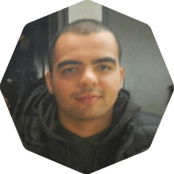
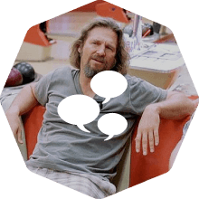

Atividades
-
Passeio de Buggy
Curta esta aventura off-road pelas praias de areia branca de Muro Alto, Cupe, Porto de Galinhas e Maracaípe. Realizada pela PontesTur.
Comprar ingresso -
Passeio de Jangada
Navegue pelas famosas piscinas naturais de Porto de Galinhas no tradicional barco a vela usado pelos pescadores nordestinos. Realizada pela PontesTur.
Comprar ingresso
Palestras
-
Ônibus de Recife para Porto de Galinhas
 Saindo da Praça do Derby
Saindo da Praça do Derby
Saindo do Aeroporto
Passando por Porto de Galinhas -
Credenciamento

-
Keynote: Nos Encontramos na Trilha!
-
Mantendo um Projeto Ruby de 5 Anos
Manter uma base de código Ruby pequena é simples, porém conforme o tempo passa o seu código irá se tornará mais difícil de manter. Nesta palestra serão mostradas diversas técnicas de desenvolvimento, padrões e boas práticas utilizadas pela equipe do DNSimple para desenvolver novas funcionalidades sem prejudicar a manutenção a longo prazo da base de código. Mais
-
Criptografia para Desenvolvedores Rails
Você sabe que HTTPS mantém o seu website seguro mas você não sabe como? Ruby acaba de lançar uma nova versão que corrige uma vulnerabilidade SSL mas você sabe que sua aplicação ainda pode estar vulnerável? Criptografia é um difícil e imenso tema e esta palestra irá lhe dar uma ótima introdução. Você não precisa ter conhecimento prévio de criptografia, apenas uma mente aberta! Você aprenderá sobre criptografia de chave pública, SSL/TLS e dicas de Ruby que deixarão sua aplicação segura. Mais
-
Escolhas de Frontend
Rails nasceu em 2004 na época da chamada "Revolução AJAX". Com ajuda de um pouco de Prototype.js, Scriptaculous e RJS, o Rails deixou sua marca pois facilitou a criação de interfaces bonitas e altamente interativas em pouquissimo tempo.
Pulando para 2015, quando frameworks como Meteor e Hoddie estão cada vez mais capturando o senso comum no desenvolvimento Web. Nós estamos na década do JavaScript? O "Rails Way" continua sendo relevante para o mundo do frontend? Mais -
Coffee Break

-
Escrevendo sua DSL em Ruby
Nessa apresentação iremos ver alguns conceitos da linguagem Ruby que irão nos ajudar a escrever a nossa própria Linguagem de Domínio Específico (DSL). É uma apresentação bastante prática. Vamos trabalhar com classes dinamicas, métodos dinamicos, blocos, procs e encadeamento de métodos, mas nosso objetivo principal é escrever (e aprender como) a nossa própria DSL para gerar um Cardápio de Pizzas. Mais
-
POROs para o Resgate
Tornar uma base de código legada em algo gerenciável é uma tarefa que todos nós já fomos desafiados a realizar. Nos últimos 10 anos, desde quando começamos a escrever aplicações em Ruby, muito mudou em relação a arquitetura e padrões de projetos. Como você transformaria um código legado em algo mais atual utilizando práticas como POROs (Plain Old Ruby Objects), modelos magros, presenters e decorators? Esta palestra irá mostrar como sobreviver à viagem no tempo para contar a história. Mais
-
Ruby-Concorrente: Programação Concorrente com Ruby
Lucas Allan
Há rumores dizendo que é impossível escrever aplicações concorrentes com Ruby, assim como há muito tempo atrás as pessoas acreditam que a terra era plana e todos nós sabemos como isso terminou… Entre as threads nativas introduzidas no MRI 1.9 e todo o poder da JVM (disponível para JRuby), Ruby se tornou uma plataforma válida para o desenvolvimento de aplicações concorrentes. Porém, concorrência ainda é um assunto complicado e Ruby não possuía as mesmas ferramentas que linguagens como Clojure, Scala, Erlang e GO possuiam. Mas isso é passado. Mais
-
Projeto Orientado a Objetos, Rails e Porque Você Deveria Pensar Duas Vezes Antes de Abandonar o Rails Way
A comunidade de Ruby tem sido bombardeada por discussões excessivas sobre boas práticas de projeto de software. Acrônimos como SOLID, DCI e SOA estão em pauta na comunidade, todos prometendo materializar o fantasma manutenção de software. O que poucas destas discussões falam é que a aplicação destes princípios e técnicas também causa impacto na manutenção do software.
Nesta palestra eu irei apresentar alguns deste conceitos e mostrar os sintomas que eles podem causar em seus projetos se forem aplicados incorretamente. Mais -
Coffee Break
-
25 Minutos de Web Semântica
A promessa é: explicar em 10 minutos porque usar a conceitos da Web Semântica na hora de construir a sua aplicação ou site. Nos 15 minutos restantes, a idéia é mostrar 15 exemplos, um por minuto, de aplicações que tiram proveito do poder da Web Semântica :-)
-
Painel: The Rails Way vs. Trailblazer
R. França, C. Antonio, C. Fernandes & N. Sutterer
A melhor forma de organizar e estruturar aplicações Rails tem sido alvo de muitas discussões nos últimos anos na comunidade. Enquanto uns acham necessário criar novas camadas de abstração em busca de uma arquitetura mais sustentável, outros defendem que nós não devemos abandonar o Rails Way por causa de suas convenções e compatibilidade.
Neste painel core commiters do Rails e o criador do Trailblazer irão discutir ambas abordagens, seus pontos de vista, porque escolheram seguir diferentes caminhos e porque continuam a ser amigos. Mais -
Ônibus de Porto de Galinhas para Recife
Saindo do Summerville
Chegando no Aeroporto
Passando por Porto de Galinhas
Chegando na Praça do Derby